Ceci n’est pas une route. It’s a great place to be!
Who are we?
Surlepont is an action group of Anderlecht inhabitants that strives to foster Marchant bridge as an iconic, green & urban social space.
The future of the bridge is about to be decided. Surlepont wants to give a voice to all the residents and passers-by who value this place and support the idea of an active transport bridge.
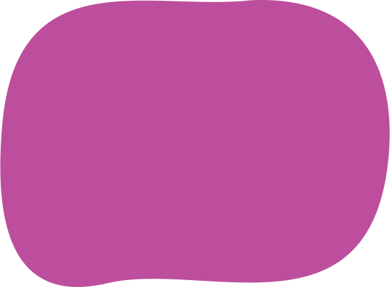
The place is so unique and valuable because it combines:
An iconic viewpoint that invites you to stay and experience
An urban social space that motivates you to meet and participate
A green corridor that promotes active mobility and healthy living
Recently we met Gianna, Ward and their little dog Dali. Gianna is Italian, Ward a native of Ghent. They got to know this place when they lived at Saint-Guidon. Today they live in The Wheel, but they still come to the bridge very
regularly, to play with their dog Dali, and to enjoy the sunshine and the view of the canal and the Brussels skyline.
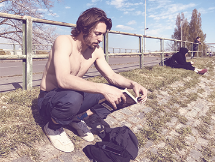
Sur Le Pont brings the friends of the Pierre Marchant Bridge together virtually! Winston is Swedish, grew up in England but moved to Brussels recently. He lives at a ten minutes’ walk from the bridge and you will find him here when the
sun is out, enjoying the weather and a good book.
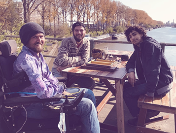
Sur Le Pont aims to bring together friends of the Pierre Marchant Bridge online. Today, we present you Baptiste, Julien and Ilyas, three friends who live in Cureghem. They often meet on the bridge for a game of backgammon.
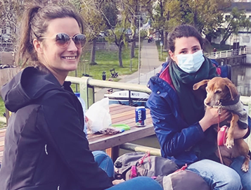
Recently we met the friends Anna and Flora. Anna lives in the center of Brussels, Flora and her dog Poutchi in Ixelles. They love to catch up with each other while walking along the canal. And of course, at the end of each walk there is
always our lovely bridge for a moment of rest and a drink.
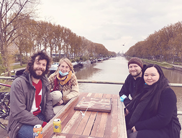
Jef, Katrien, Arnout and Djaina also meet regularly on our bridge. Their story parallels that of countless others we met in recent weeks: they discovered this place especially during the lockdowns, during which the lack of quality green
space in our city became so apparent. There has been much talk over the past year about the need for perspective, and let's face it, perspective abounds here. On top of that, a summer with fewer worries looms on the horizon, and even an
outdoor pool....
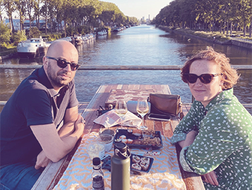
Wim from Halle and Lore from Saint-Gilles also know that our bridge is the ideal place for a romantic dinner at sunset. See less - feeling romantic.
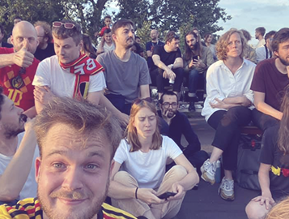
Tonight the bridge welcomed the non-profit organization Stoepkrijt. Since 5 years, a great team around Ben, Dries, Jonathan, Pieter & Jonas from Molenbeek and Forest has been ensuring that people can get together to watch the Red Devils
games on a big screen. This evening the sidewalk chalkers chose the bridge as their spot. The atmosphere was fantastic, even after the match. Thank you for these beautiful moments! https://instagram.com/vzw_stoepkrijt
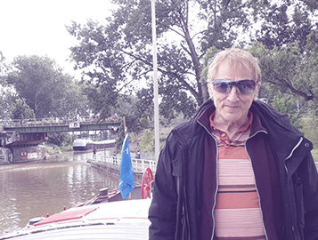
Bruno Steinrücke is one of the founders and current president of Sémaphore, the only youth house in Belgium on the water. The barge is located next to the Marchant bridge, at the Biestebroeck quay. He also lives in a barge located on the
Digue du Canal, and is treasurer of the association of barge inhabitants. So he has been involved on both sides of the bridge for decades.
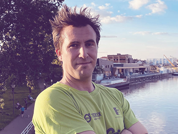
Pieter lives in Cureghem. Our bridge is a regular stop on the running training sessions along the canal that he undertakes regularly.
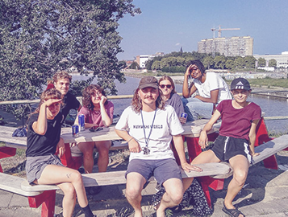
Maya and Flavien have just moved to Rue de la Gaité. Their friends, Bilou, Emma, David, Lucie, Hichem, came to help them move some furniture in their new house. They share a beer in the sun. They couldn't have asked for a better setting!
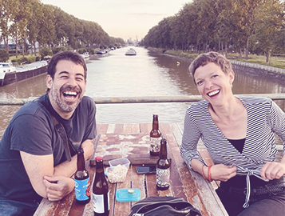
Ah, these two really stole our hearts... Javi (Saint-Gilles) and Marie Cecile (Forest) had their first blind date at our bridge. We don't know if the date was a success, but we know for sure that they discovered one of the most romantic
places in town!
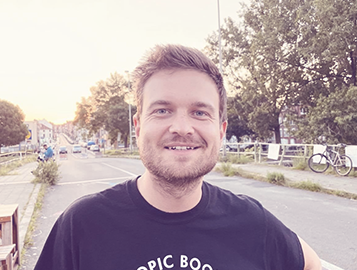
Pieter lives in Cureghem, a fifteen-minute walk from our bridge. It is the nearest public green space for him, and so he often descends to this special place on summer evenings, with a good book or some friends for company.
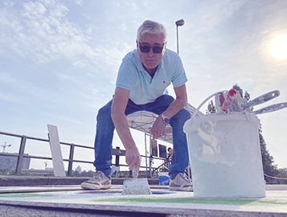
Joaquin is one of the many residents who came to the bridge on Sunday without a car. He is Portuguese, lives in Chaussée de Mons and comes regularly to walk on the bridge.
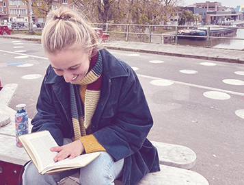
Laura moved from Saint-Gilles to Cureghem a few months ago. Since then, she too has been a regular visitor to the bridge, where she enjoys the view or a good book (for those interested: she is currently reading Knut Hamsun, in Norwegian
by the way)
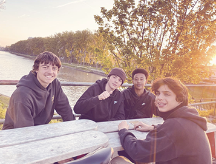
Casimir, Milo, Edgar and Robel can also regularly be found on our bridge, recovering from a long day of school or an intensive climbing workout in Petite Île.
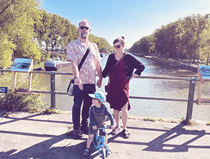
Joost, Geertje and Gustav cross the bridge several times a day, on foot or by bicycle.
Les amis du Pont
Surlepont also wants to bring the friends of the Pierre Marchant Bridge together online.


.svg)